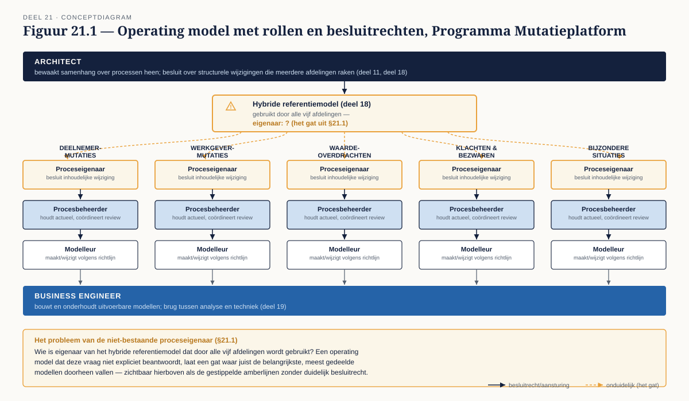
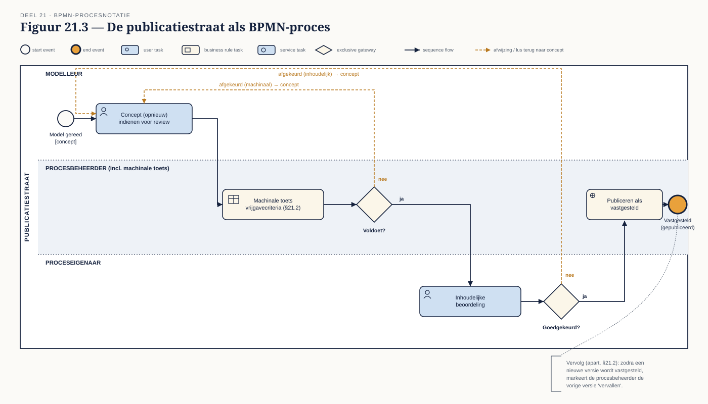
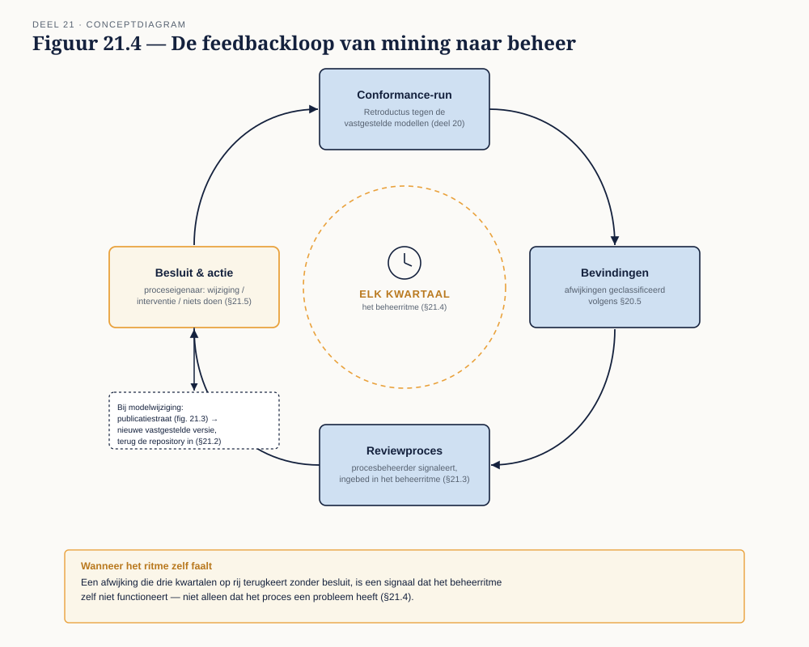
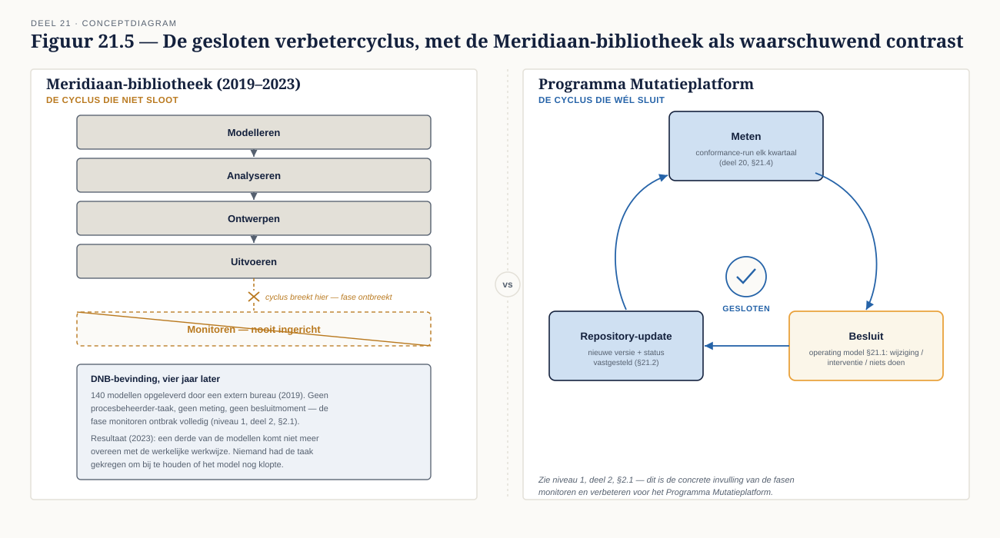

Deel 21 — Governance van modellen
Reader · Ductus-cursus BPMN, CMMN & DMN · niveau 2 (praktijk) · deel 21 van 30 · studielast ± 6 uur
Dit materiaal bereidt voor op het examen OCEB 2 Business Intermediate van de Object Management Group. Het is geen vervanging van het officiële examenmateriaal.
Leerdoelen
Na dit deel kun je:
- Een operating model voor procesmanagement ontwerpen met heldere rollen.
- Repository governance inrichten: statussen, publicatiestraat, vrijgave.
- Modelleerkwaliteit meten en handhaven zonder een controleorgaan te worden.
- De verbetercyclus sluiten: van meting naar modelwijziging naar release.
- Datagovernance-principes toepassen op modelbeheer.
Van meting naar structuur
Deel 20 leverde een concrete bevinding op: je eigen model, getoetst tegen de werkelijkheid, bleek op punten af te wijken. Dat is precies het probleem dat dit deel oplost — niet door die ene bevinding te herstellen, maar door een structuur te bouwen waarin zulke bevindingen vanzelfsprekend en regelmatig aan het licht komen en tot besluiten leiden, in plaats van een eenmalige exercise te blijven.
21.1 Operating model
Een operating model voor procesmanagement wijst rollen toe aan de verantwoordelijkheden die eerder in deze cursus impliciet bleven:
- Proceseigenaar — inhoudelijk verantwoordelijk voor een proces of procesfamilie (deel 11); beslist over wijzigingen die de werking van het proces raken.
- Procesbeheerder — houdt de modellen actueel, coördineert reviews (deel 11, §11.5), signaleert wanneer een model verouderd dreigt te raken.
- Modelleur — maakt en wijzigt de modellen zelf, volgens de modelleerrichtlijn (deel 11).
- Architect — bewaakt de samenhang over processen heen (de procesarchitectuur uit deel 11, de combinatiepatronen uit deel 18), beslist over structurele wijzigingen die meerdere processen raken.
- Business engineer — de rol die uitvoerbare modellen bouwt en onderhoudt (deel 19), de brug tussen analyse en techniek.
Het probleem van de niet-bestaande proceseigenaar. In de praktijk — en dit gold al voor de procesplaat-oefening in deel 11 — is niet elk proces eigenaar van één duidelijke persoon. Bij het Mutatieplatform, met vijf afdelingen en een streven naar hergebruik (deel 18), is dit reëel: wie is eigenaar van het hybride referentiemodel dat door alle vijf de afdelingen wordt gebruikt? Een operating model dat deze vraag niet expliciet beantwoordt, laat een gat waar juist de belangrijkste, meest gedeelde modellen doorheen vallen.
21.2 Repository governance
Statussen. Een model doorloopt doorgaans: concept (in ontwikkeling, nog niet gedeeld), in review (voorgelegd volgens het reviewprotocol uit deel 11, §11.5), vastgesteld (goedgekeurd, de geldende versie), vervallen (vervangen door een nieuwere versie, of het onderliggende proces bestaat niet meer).
Publicatiestraat. Het mechanisme waarmee een model van de ene status naar de andere gaat: wie mag een concept indienen voor review, wat gebeurt er bij afkeuring, wie zet een vastgesteld model definitief op vervallen. Dit is, net als het reviewprotocol uit deel 11, zelf iets dat je als BPMN-proces kunt modelleren — een toepassing van het vak op zichzelf die verrassend vaak verhelderend werkt.
Vrijgavecriteria. De voorwaarden waaraan een model moet voldoen voordat het van in review naar vastgesteld mag: minimaal de machinaal toetsbare, verplichte regels uit de modelleerrichtlijn (deel 11, §11.4), aangevuld met een inhoudelijke goedkeuring door de proceseigenaar.
Wie ziet welke versie. Voor de meeste doeleinden is alleen de vastgestelde versie relevant voor de organisatie, maar — zoals deel 16, §16.3 al liet zien voor regels — soms is een oudere versie nodig om een historisch geval correct te kunnen beoordelen. Repository governance voor modellen kent daarom, net als voor regels, waarde in het bewaren van versiehistorie, niet alleen de huidige stand.
21.3 Kwaliteit meten en handhaven
Wat je machinaal toetst. De structurele validatie uit deel 5 van niveau 1 (§5.4) — poolgrenzen, splitsings-/samenkomsttype, volledigheid van beslistabellen (deel 15, §15.6) — kan door een tool worden afgedwongen als onderdeel van de publicatiestraat, zonder menselijke tussenkomst.
Wat je in review toetst. Semantische correctheid (klopt het model met de werkelijkheid — nu, na deel 20, ook onderbouwd met conformance-data) en stilistische kwaliteit (deel 5, §5.4) blijven mensenwerk.
Wat je loslaat. Niet elke afwijking van de modelleerrichtlijn verdient handhaving tot in de details — zie deel 11, §11.4's waarschuwing tegen het verplicht maken van alles. Een governancestructuur die op elk klein detail handhaaft, wordt het politiekorps waar deel 11 al voor waarschuwde, nu op programmaniveau.
21.4 De feedbackloop institutionaliseren
Dit is de paragraaf die rechtstreeks uit deel 20 voortkomt. Een eenmalige conformance-analyse is een onderzoek; een terugkerende conformance-analyse, ingebed in het beheerritme, is governance.
Wat dit concreet betekent. In plaats van mining als incidenteel project te beschouwen, neem je het op als vast onderdeel van de procesbeheerder-rol (§21.1): elk kwartaal (of een andere, passende cyclus) een conformance-run tegen de vastgestelde modellen, met de bevindingen als vaste inputstroom voor het reviewproces. Een afwijking die drie kwartalen op rij terugkeert zonder besluit, is een signaal dat het beheerritme zelf niet functioneert — niet alleen dat het proces een probleem heeft.
21.5 De cyclus sluiten
Niveau 1, deel 2, §2.1 introduceerde de BPM-levenscyclus en het voorbeeld van de Meridiaan-modellenbibliotheek die vier jaar na oplevering voor een derde niet meer klopte — precies omdat de fase "monitoren" ontbrak. Met deel 20 en dit deel heb je nu het volledige instrumentarium om dat te voorkomen: meten (deel 20), structureel laten landen (§21.4), en een operating model (§21.1) dat bepaalt wie op die meting reageert.
De cyclus is pas gesloten als een bevinding daadwerkelijk tot een besluit leidt — modelwijziging, procesinterventie, of bewust niets doen (deel 20, §20.6) — en dat besluit weer in de repository (§21.2) wordt vastgelegd met een nieuwe versie en een bijgewerkte status.
21.6 Governance van modellen als governancevraagstuk
Eigenaarschap, definities, kwaliteitscriteria en levenscyclus zijn niet uniek voor procesmodellen — het zijn dezelfde vraagstukken die bij gegevensbeheer spelen, en wie bekend is met datagovernance zal de structuur van dit deel herkennen. Dit hoofdstuk behandelt de vraagstukken zelfstandig en volledig voor de modelcontext: een organisatie die al een datagovernance-structuur heeft, kan die als inspiratie gebruiken, maar model- en datagovernance zijn twee aparte disciplines met eigen risico's, eigen rollen (een proceseigenaar is niet hetzelfde als een data-eigenaar) en eigen tempo van wijziging. Behandel ze niet als hetzelfde vraagstuk met een andere naam.
Kernbegrippen
Operating model — de rolverdeling voor procesmanagement (proceseigenaar, procesbeheerder, modelleur, architect, business engineer) · Repository governance — statussen, publicatiestraat, vrijgavecriteria · Machinaal / in review / losgelaten — de drie niveaus van kwaliteitshandhaving · Feedbackloop institutionaliseren — mining als terugkerend onderdeel van het beheerritme, niet als eenmalig onderzoek · Gesloten verbetercyclus — van meting via besluit tot bijgewerkte, versiebeheerde repository
Examenrelevantie — OCEB 2 Business Intermediate
Procesgovernance, rollen en continu verbeteren zijn expliciete onderdelen van dit examen, met nadruk op toegepaste scenario's: gegeven een governance-structuur, beoordelen of ze compleet is.
Leeswijzer
Geen apart hoofdstuk in de OMG-standaarden zelf; dit deel bouwt op de BPM-levenscyclus uit niveau 1, deel 2, en op algemeen erkende governance-praktijk zoals ook behandeld in de relevante OCEB 2 Business-track literatuur.
Figurenlijst




